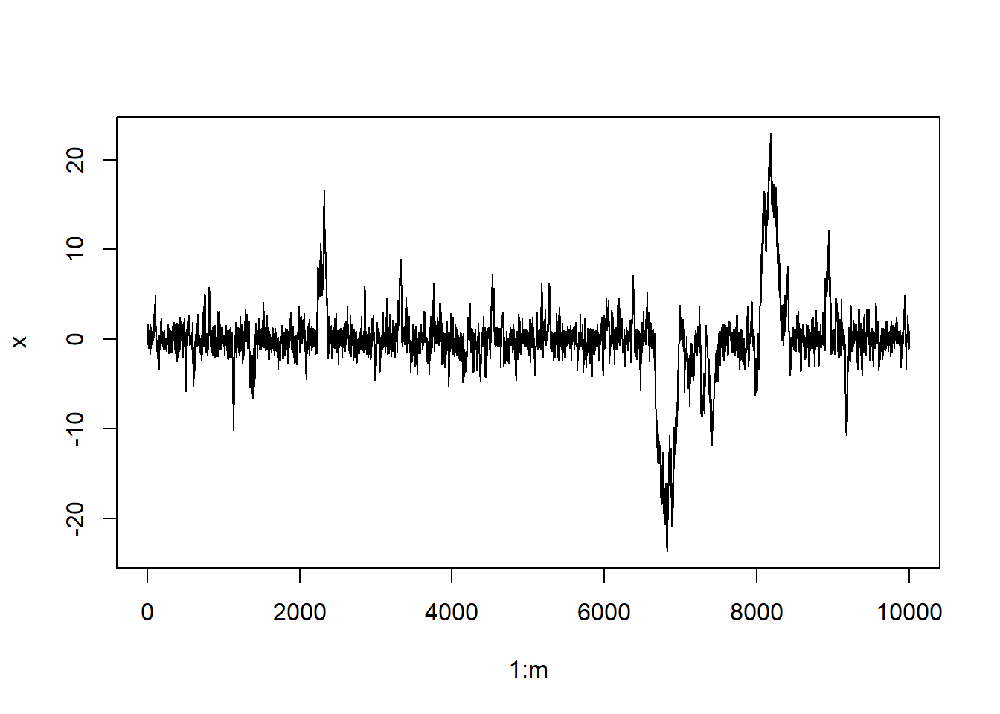
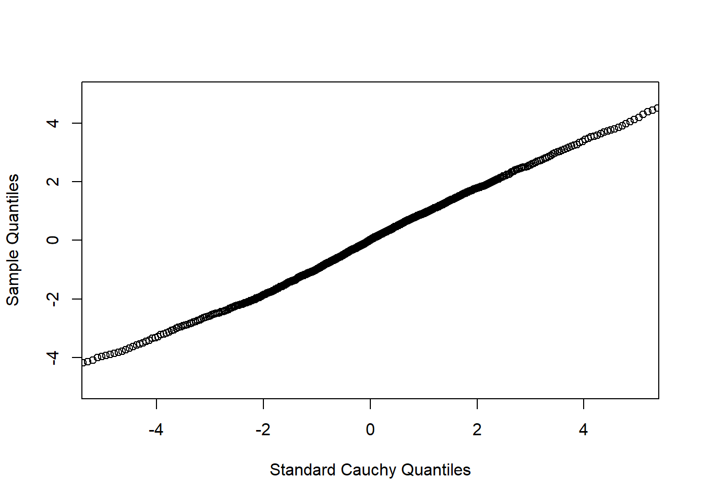
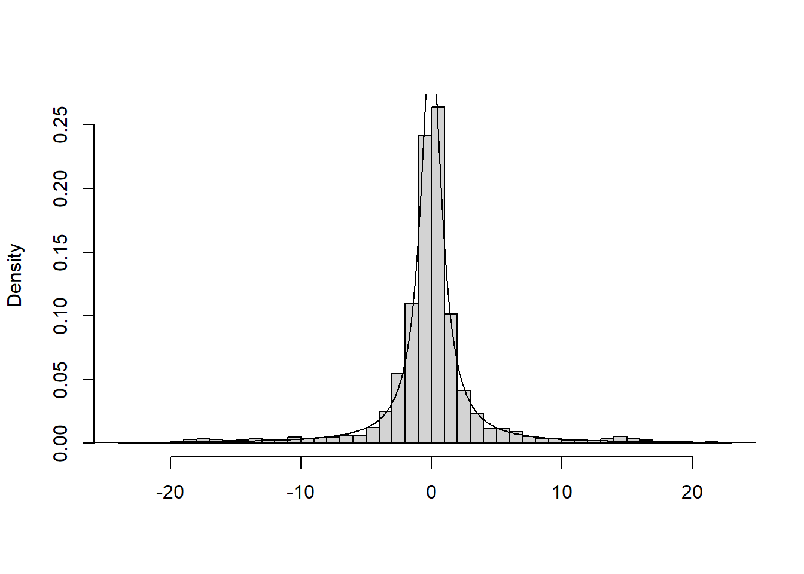
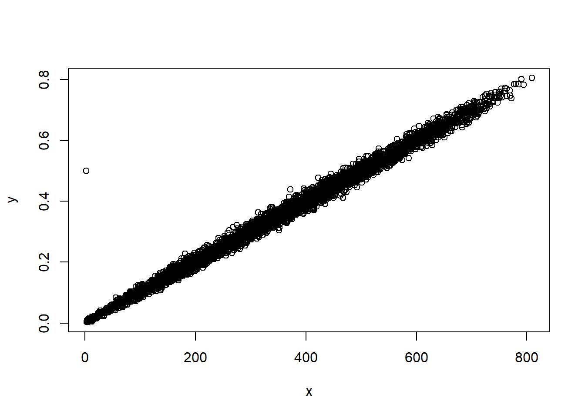
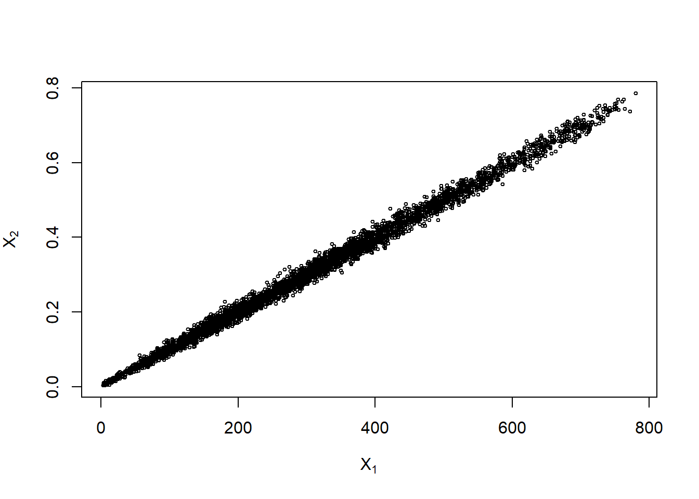
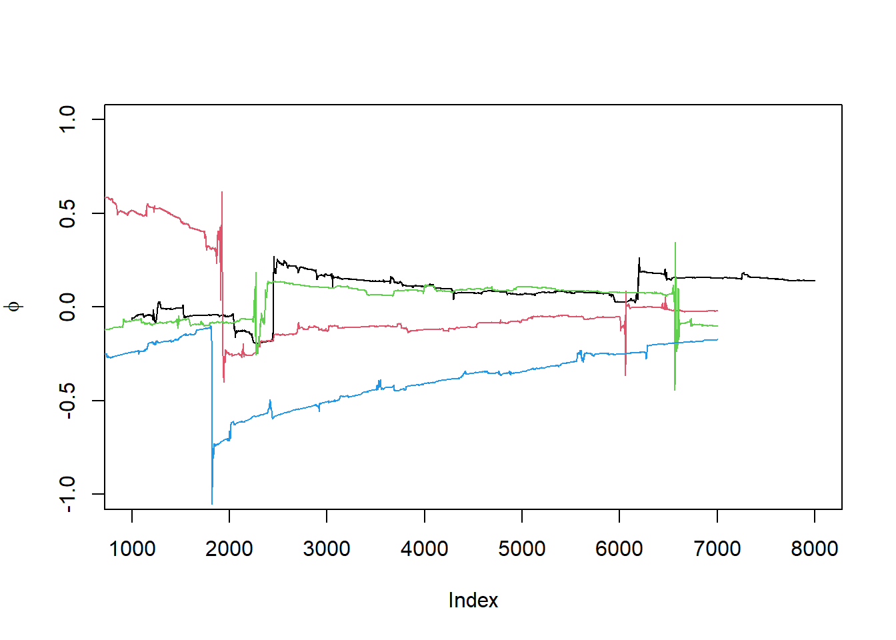
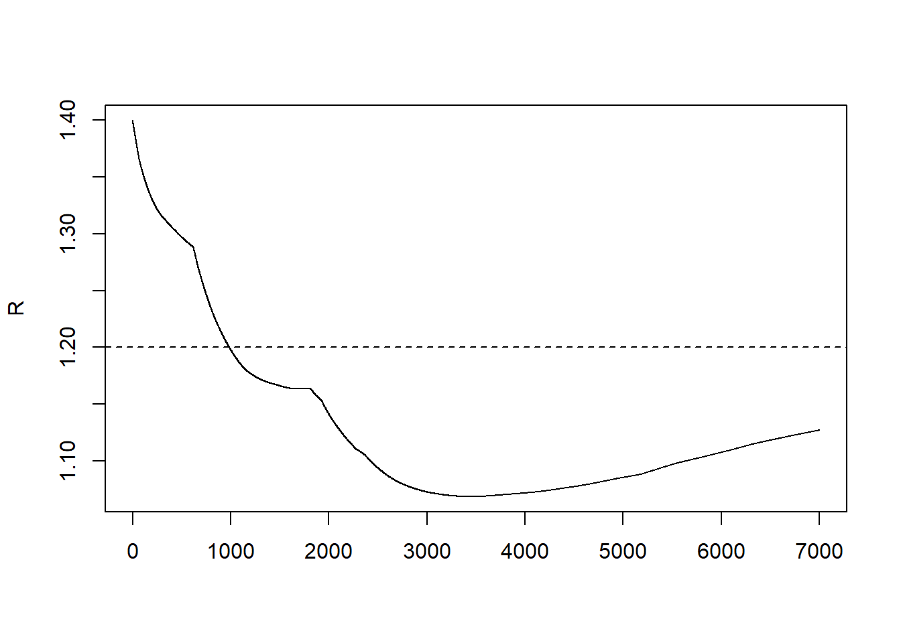
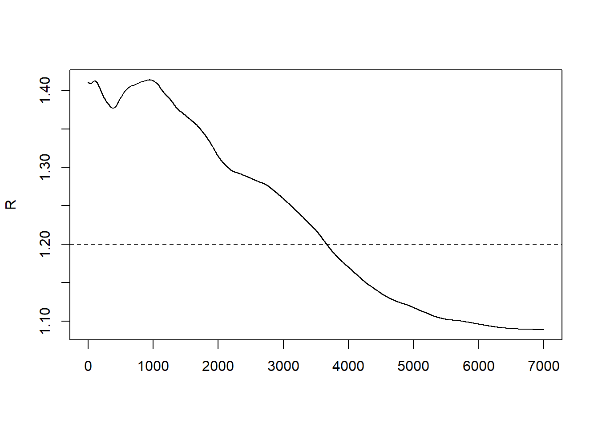
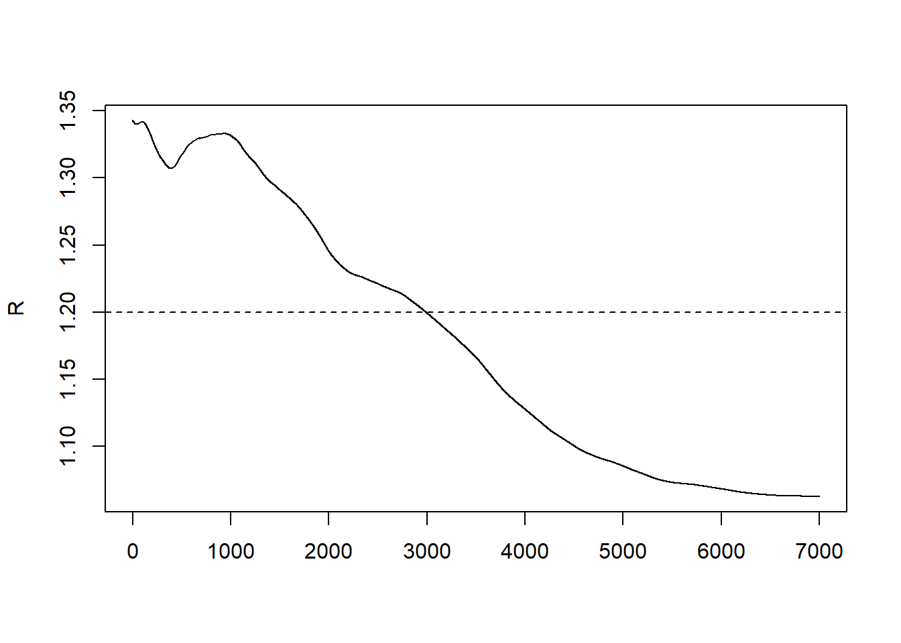

8 第8次作业解答
8.1 Question
Exercies 9.3 and 9.8 (pages 277-278, Statistical Computating with R).
For each of the above exercise, use the Gelman-Rubin method to monitor convergence of the chain, and run the chain until it converges approximately to the target distribution according to $R< 1.2 $
8.2 Answer
8.2.1 9.3
Use the Metropolis-Hastings sampler to generate random variables from a standard Cauchy distribution. Discard the first 1000 of the chain, and compare the deciles of the generated observations with the deciles of the standard Cauchy distribution (see qcauchy or qt with df=1). Recall that a Cauchy \((\theta, \eta)\) distribution has density function \[ f(x)=\frac{1}{\theta \pi\left(1+[(x-\eta) / \theta]^{2}\right)}, \quad-\infty<x<\infty, \theta>0 \] The standard Cauchy has the Cauchy \((\theta=1, \eta=0)\) density. (Note that the standard Cauchy density is equal to the Student \(\mathrm{t}\) density with one degree of freedom.)
set.seed(123)
## standard Cauchy
f <- function(x) {
return(1/(pi*(1+x^2)))
}
m <- 10000
x <- numeric(m)
x[1] <- rnorm(1)
k <- 0
u <- runif(m)
for (i in 2:m) {
xt <- x[i-1]
y <- rnorm(1, mean = xt)
num <- f(y) * dnorm(xt, mean = y)
den <- f(xt) * dnorm(y, mean = xt)
if (u[i] <= num/den) x[i] <- y else {
x[i] <- xt
k <- k+1 #y is rejected
}
}
## MC过程图
plot(1:m, x, type="l", main="", ylab="x")
b <- 1000
y <- x[b:m]
a <- ppoints(1000)
Qc <- qcauchy(a)
Q <- quantile(x, a)
## QQ图
qqplot(Qc, Q, main="",xlim=c(-5,5),ylim=c(-5,5),xlab="Standard Cauchy Quantiles", ylab="Sample Quantiles")
## 直方图
hist(y, breaks="scott", main="", xlab="", freq=FALSE)
lines(Qc, f(Qc))
8.2.2 9.8
This example appears in [40]. Consider the bivariate density \[ f(x, y) \propto\left(\begin{array}{l} n \\ x \end{array}\right) y^{x+a-1}(1-y)^{n-x+b-1}, \quad x=0,1, \ldots, n, 0 \leq y \leq 1 \] It can be shown (see e.g. \([23]\) ) that for fixed \(a, b, n\), the conditional distributions are \(\operatorname{Binomial}(n, y)\) and \(\operatorname{Beta}(x+a, n-x+b)\). Use the Gibbs sampler to generate a chain with target joint density \(f(x, y)\).
set.seed(2)
N <- 5000 #length of chain
burn <- 1000 #burn-in length
a <- 2
b <- 3
n <- 1000
X <- matrix(0, N, 2) #the chain, a bivariate sample
#initialize
x0=2
y0=0.5
###### generate the chain #####
X[1, ] <- c(x0,y0) #initialize
for (i in 2:N) {
y <- X[i-1, 2]
X[i, 1] <- rbinom(1,size=n,prob = y)
x <- X[i, 1]
X[i, 2] <- rbeta(1,x+a,n-x+b)
}
lab <- burn + 1
out <- X[lab:N, ]
plot(X[,1],X[,2],xlab = "x",ylab = "y")
cat("协方差矩阵\n")## 协方差矩阵cov(out) ## 协方差矩阵## [,1] [,2]
## [1,] 30062.95389 29.91243495
## [2,] 29.91243 0.02994719cat("相关系数矩阵\n")## 相关系数矩阵cor(out) ## 相关系数矩阵## [,1] [,2]
## [1,] 1.0000000 0.9969145
## [2,] 0.9969145 1.0000000plot(out, main="", cex=.5, xlab=bquote(X[1]),
ylab=bquote(X[2]), ylim=range(out[,2])) ## 分布图
8.2.3 Discussion
For each of the above exercise, use the Gelman-Rubin method to monitor convergence of the chain, and run the chain until it converges approximately to the target distribution according to \(\hat R<1.2\)
解答：
# 计算Gelman-Rubin statistic的函数
Gelman.Rubin <- function(psi) {
# psi[i,j] is the statistic psi(X[i,1:j])
# for chain in i-th row of X
psi <- as.matrix(psi)
n <- ncol(psi)
k <- nrow(psi)
psi.means <- rowMeans(psi) #row means
B <- n * var(psi.means) #between variance est.
psi.w <- apply(psi, 1, "var") #within variances
W <- mean(psi.w) #within est.
v.hat <- W*(n-1)/n + (B/n) #upper variance est.
r.hat <- v.hat / W #G-R statistic
return(r.hat)
}8.2.3.1 9.3
先按照9.3题写出构造标准柯西分布的Metropolis chain的函数
# 生成标准柯西分布的Metropolis chain
# 提议函数仍取9.3中使用的对称正态分布 N(0,X[t]^2)
# X1为初始值
Standard_Cauchy_Chain <- function(N, X1){
X <- numeric(N)
X[1] <- X1 #初始值
for(i in 2:N){
Xt <- X[i-1]
Y <- rnorm(1,0,abs(Xt))
r <- dt(Y,1)*dnorm(Xt,0,abs(Y))/dt(Xt,1)/dnorm(Y,0,abs(Xt))
U <- runif(1)
if(r > 1) r <- 1
if(U <= r) X[i] <- Y
else X[i] <- Xt
}
return(X)
}接下来不妨考虑生成4条上述Metropolis chain，每条样本量N=8000。
k <- 4
N <- 8000
b <- 1000 #burn-in length
X1 <- c(0.1,0.2,0.1,0.2) #初始值
# 生成4条样本
set.seed(12345)
X <- matrix(0, nrow = k, ncol = N)
for(i in 1:k){
X[i,] <- Standard_Cauchy_Chain(N, X1[i])
}
# compute diagnostic statistics
psi <- t(apply(X, 1, cumsum))
for (i in 1:nrow(psi))
psi[i,] <- psi[i,] / (1:ncol(psi))
print(Gelman.Rubin(psi))## [1] 1.127139# 四条样本的psi
for (i in 1:k)
if(i==1){
plot((b+1):N,psi[i, (b+1):N],ylim=c(-1,1), type="l",
xlab='Index', ylab=bquote(phi))
}else{
lines(psi[i, (b+1):N], col=i)
}
par(mfrow=c(1,1)) 实际上发现四条样本的psi图并没有呈现逼近同一分布的结果，这可能是因为Cauchy分布的期望和方差不均存在，进而导致的估计不稳定性，下面再画出\(\hat R\)统计量v.s.样本量N的图。
par(mfrow=c(1,1))
#plot the sequence of R-hat statistics
rhat <- rep(0, N)
for (j in (b+1):N)
rhat[j] <- Gelman.Rubin(psi[,1:j])
plot(rhat[(b+1):N], type="l", xlab="", ylab="R")
abline(h=1.2, lty=2)
\(\hat R\) 大概在样本为1000时达到收敛。
8.2.3.2 9.8
先按照9.8题写出题中二元随机变量的Gibbs sampler，这里不妨取a=b=1。
# 生成二元随机变量的Gibbs sampler
# X1为初始值
Bivariate.Gibbs <- function(N, X1){
a <- b <- 1
X <- matrix(0, N, 2)
X[1,] <- X1 #初始值
for(i in 2:N){
X2 <- X[i-1, 2]
X[i,1] <- rbinom(1,25,X2)
X1 <- X[i,1]
X[i,2] <- rbeta(1,X1+a,25-X1+b)
}
return(X)
}不妨还是考虑生成4条样本，每条样本量N=8000.
k <- 4
N <- 8000
b <- 1000 #burn-in length
X1 <- cbind(c(2,7,10,15),runif(4)) #初始值
#生成4条样本，每个第一维的放在X中，第二维的放在Y中
set.seed(12345)
X <- matrix(0, nrow=k, ncol=N)
Y <- matrix(0, nrow=k, ncol=N)
for (i in 1:k){
BG <- Bivariate.Gibbs(N, X1[i,])
X[i, ] <- BG[,1]
Y[i, ] <- BG[,2]
}下面分别在每一个维度上考虑利用Gelman-Rubin method考虑样本的收敛情况。
# 先考虑第一维样本X
#compute diagnostic statistics
psi <- t(apply(X, 1, cumsum))
for (i in 1:nrow(psi))
psi[i,] <- psi[i,] / (1:ncol(psi))
#plot the sequence of R-hat statistics
rhat <- rep(0, N)
for (j in (b+1):N)
rhat[j] <- Gelman.Rubin(psi[,1:j])
plot(rhat[(b+1):N], type="l", xlab="", ylab="R")
abline(h=1.2, lty=2)
# 再考虑第二维样本Y
#compute diagnostic statistics
psi <- t(apply(Y, 1, cumsum))
for (i in 1:nrow(psi))
psi[i,] <- psi[i,] / (1:ncol(psi))
#plot the sequence of R-hat statistics
rhat <- rep(0, N)
for (j in (b+1):N)
rhat[j] <- Gelman.Rubin(psi[,1:j])
plot(rhat[(b+1):N], type="l", xlab="", ylab="R")
abline(h=1.2, lty=2)
综合考虑两个维度的\(\hat R\)统计量，大约在样本为4000时可以达到收敛。